Out of Sight, Out of Mind
Conclusions
Open.
Informative.
Comprehensive.
PLATFORM
Subjective.
Targeted.
Complex.
DATA
Clearly.
Effectively.
STORY
"This project helps to bring light on the topic of drones.
Not to speak for or against, but to inform and to allow you to see for yourself whether you support or not the usage of drones"
Pros and Cons
1. What The Project Does Well (pros)
Investigative Journalism:
Clarity in Communication of Complex Data
(1) Lists events chronologically
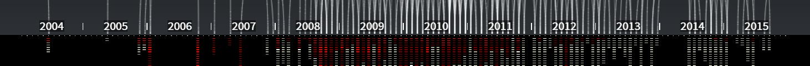
(2) Provide numeric data for each incident
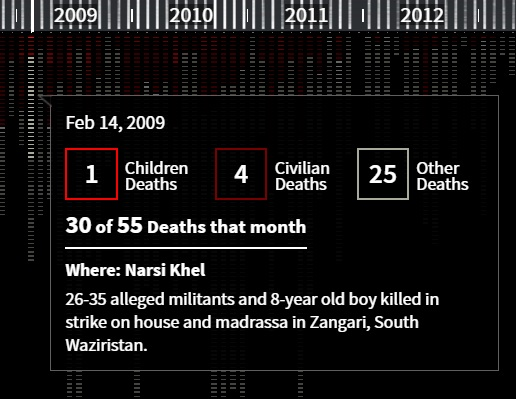
(3) Allows for comparison between incidents
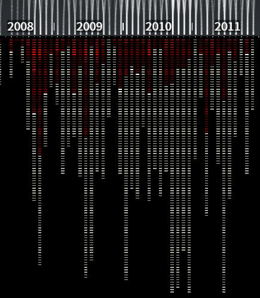
(4) Adequate Design language/ User interface
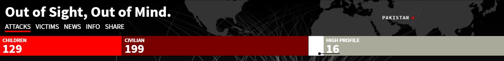
2. Limitations;
Space for improvement
(1) Spatial referencing
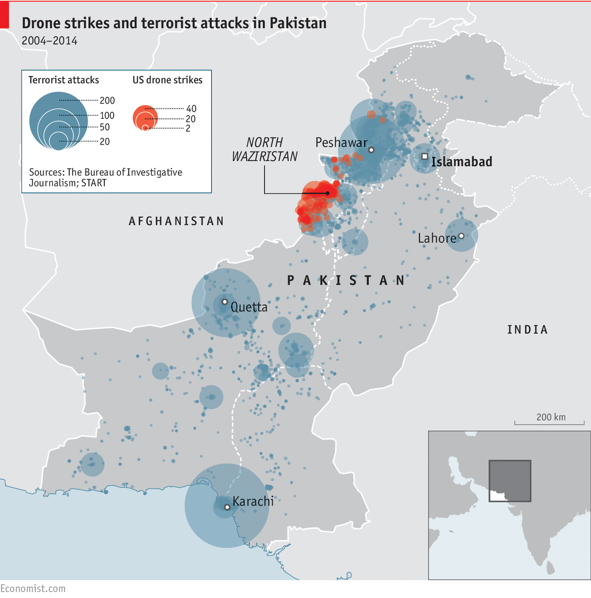
(2) Interactivity:
Control of flow:
Pausing the process
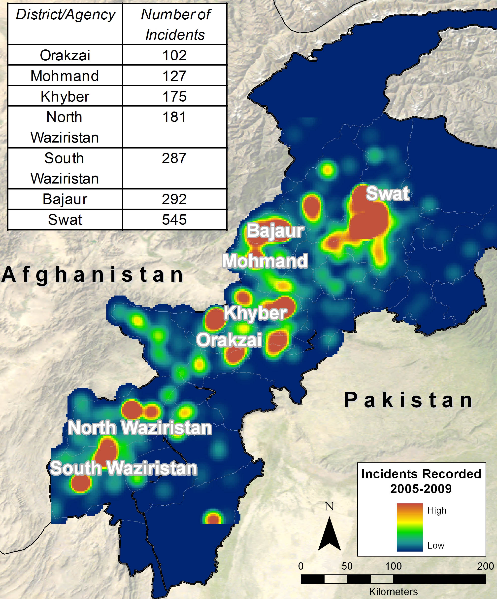
(3) Activating all corners of page;
including news tab.
(4) Allowing for data recycling:
downloading and resourcing data
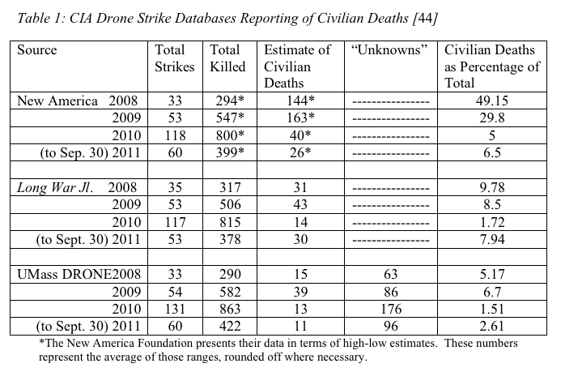
Out of Sight, Out of Mind


(2) Provide numeric data for each incident 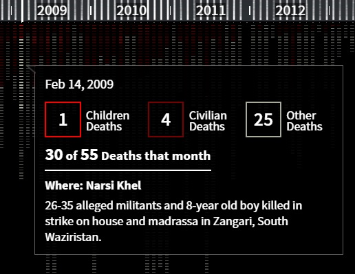
(3) Allows for comparison between incidents 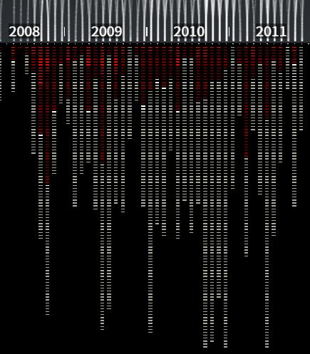
(4) Adequate Design language/ User interface 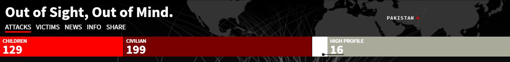
2. Limitations;
Space for improvement
(1) Spatial referencing
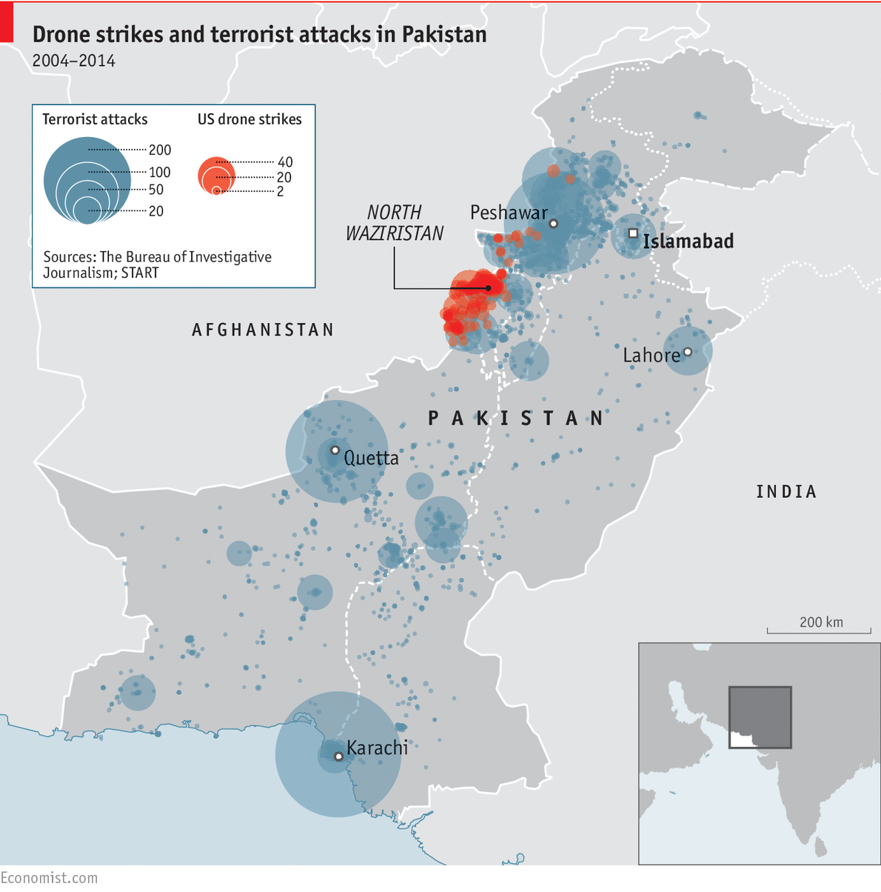
(2) Interactivity:
Control of flow:
Pausing the process
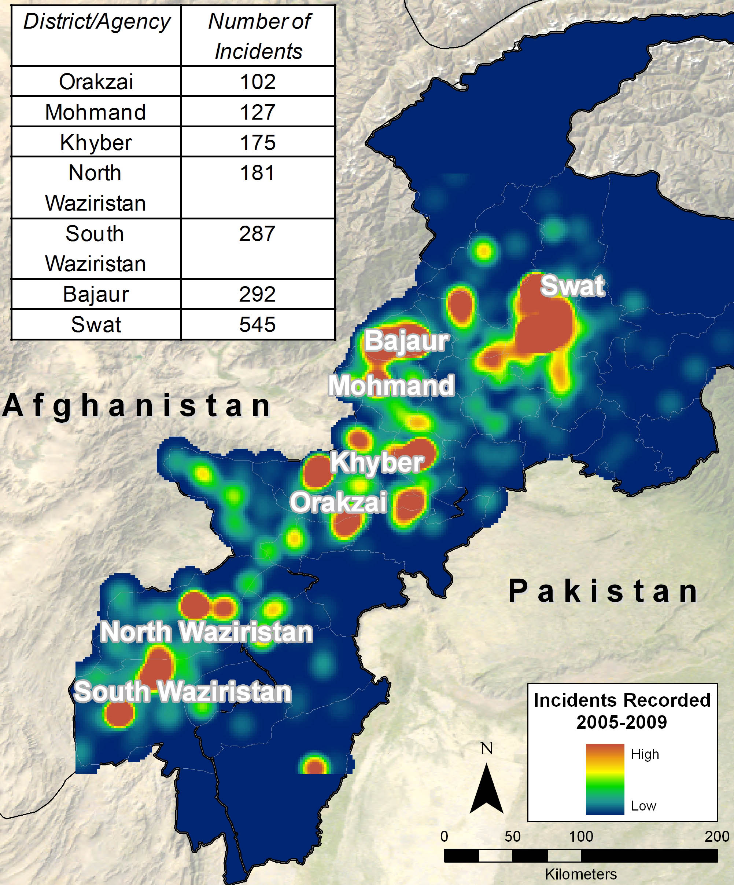
(3) Activating all corners of page;
including news tab.
(4) Allowing for data recycling:
downloading and resourcing data
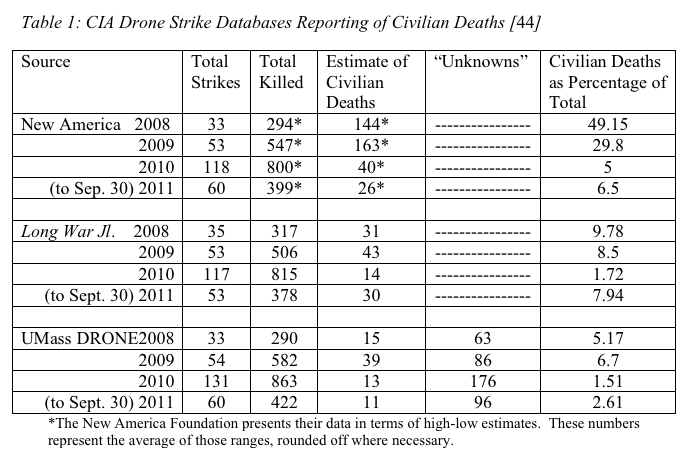
Out of Sight, Out of Mind
(2) Interactivity:
Control of flow: Pausing the process
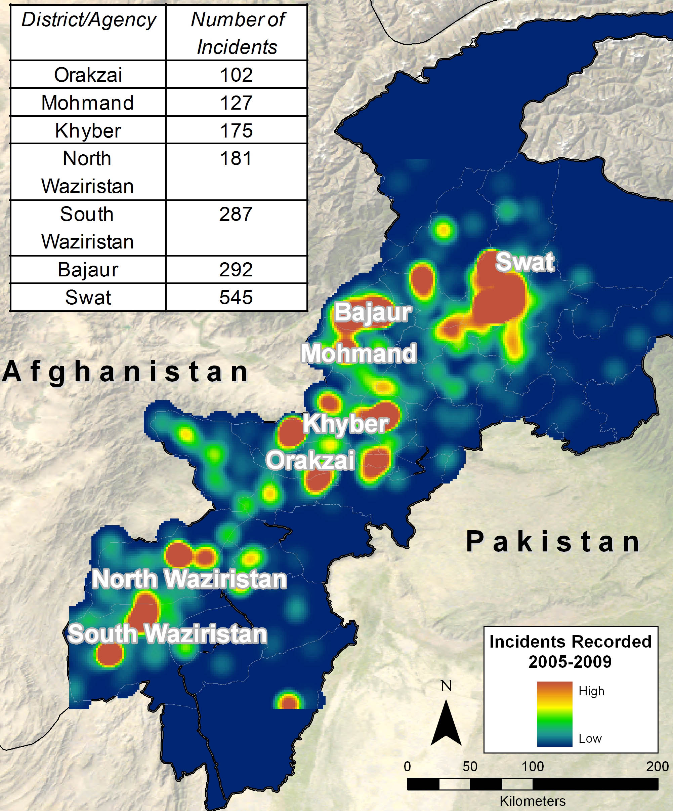
(3) Activating all corners of page;
including news tab.
(4) Allowing for data recycling:
downloading and resourcing data
(3) Activating all corners of page;
including news tab.
(4) Allowing for data recycling:
downloading and resourcing data
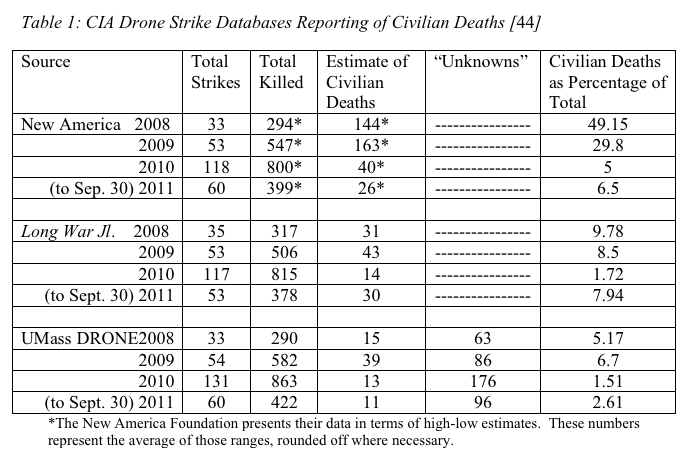
Out of Sight, Out of Mind